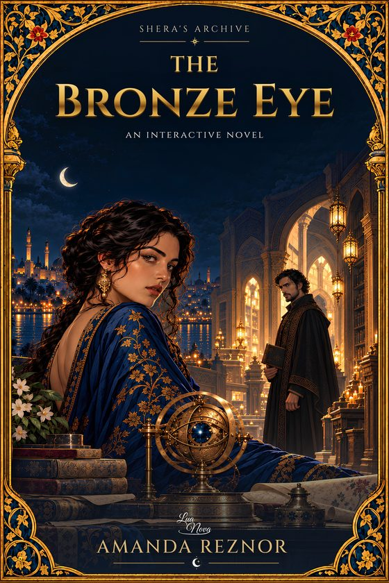
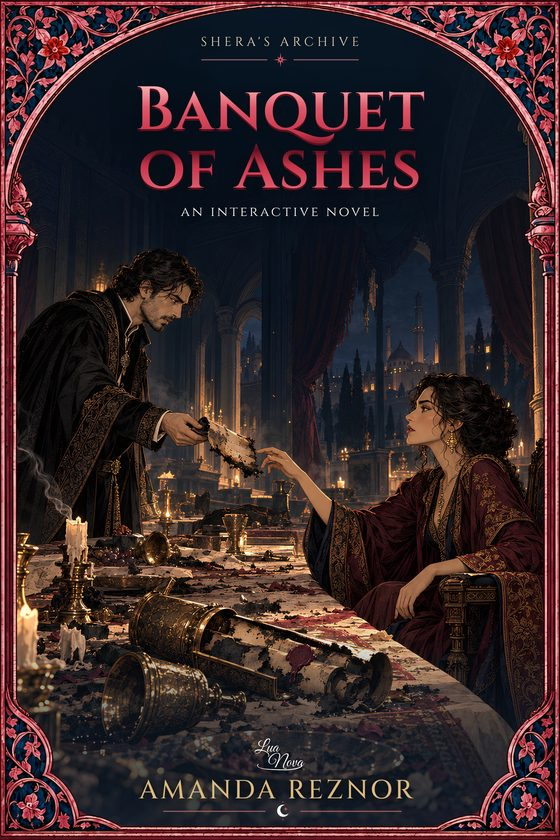
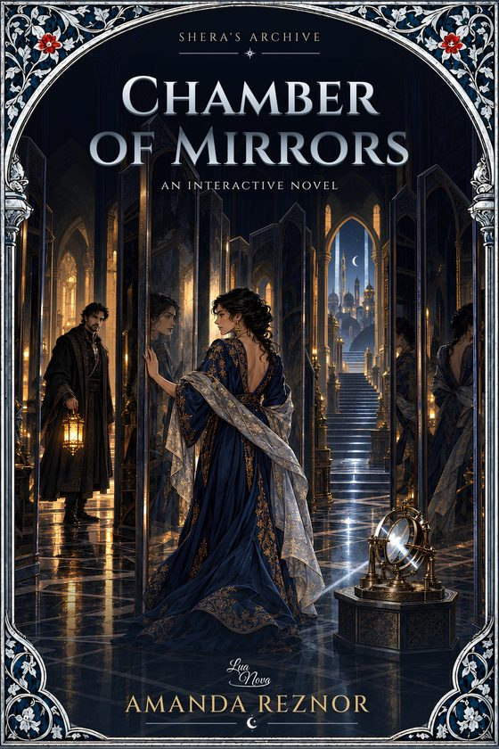
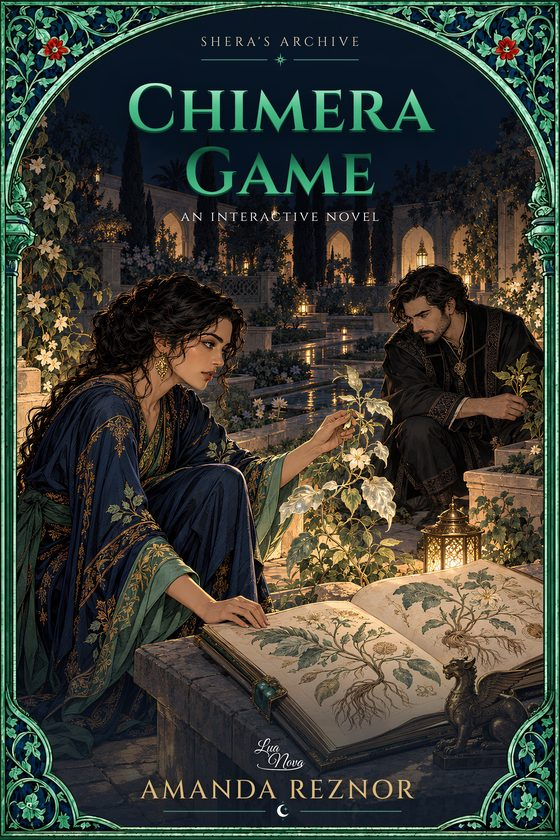
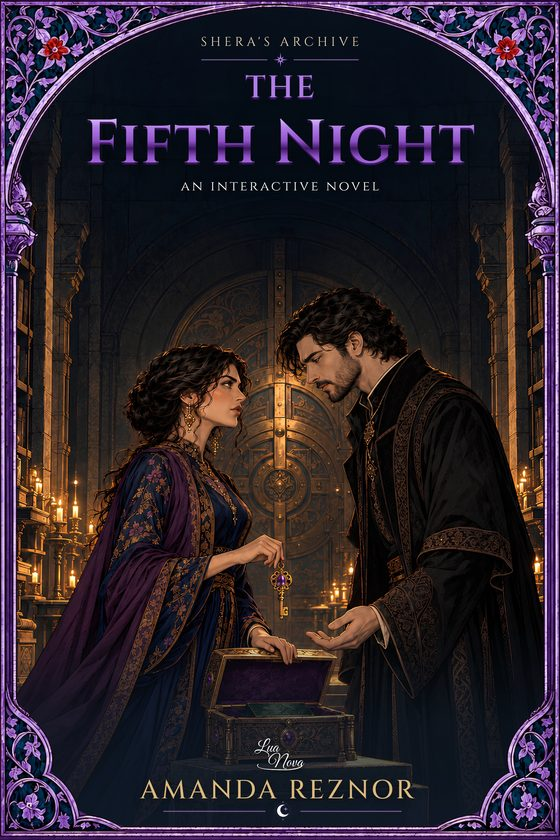
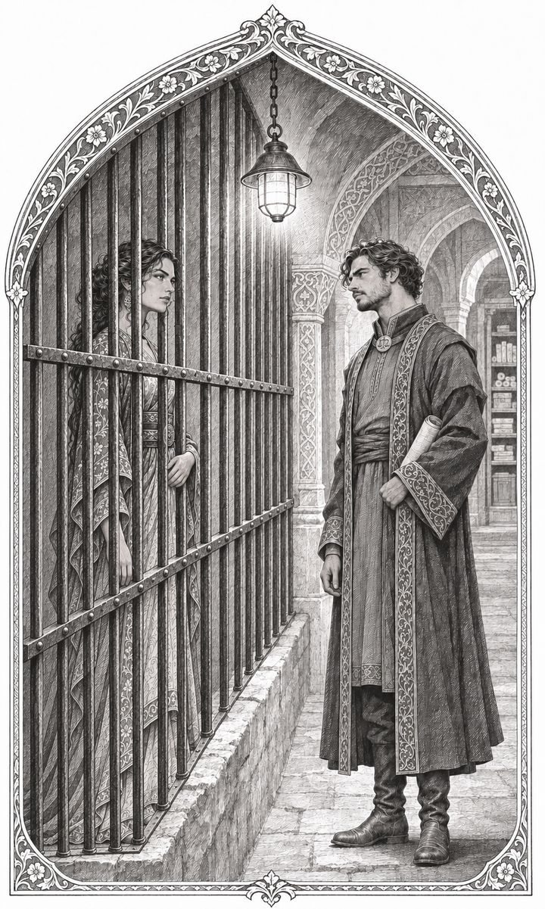
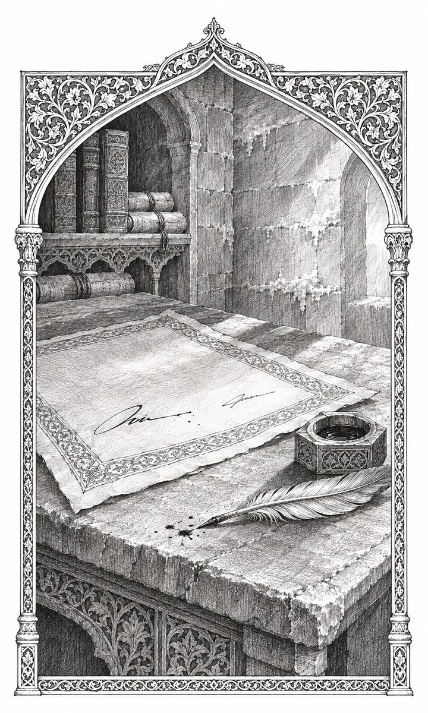

Shera
Rainha viúva, mãe de três filhos, cerca de trinta e cinco anos. Usa só metade do nome e nunca explica por quê: quem não é nomeado com exatidão não pode ser alcançado. Conta degraus quando tem medo. Recusa-se a contar histórias.
Uma série de livros-jogos de Amanda Reznor
Quatro Noites e Um Segredo
Quatro noites para salvar uma rainha. Risque os nomes impossíveis, descubra mensagens nas listas e siga uma história que muda quando você volta ao começo.

Dois anos depois de acordar de um coma, a rainha viúva Sherazade é obrigada pela corte a um segundo casamento de conveniência. Na noite da assinatura, ela é presa. O juiz que vai interrogá-la é o próprio noivo, o único Terceiro Leitor de Kerman, que acaba de ter a memória raspada e não sabe mais nada sobre ela.
“As histórias nunca foram minhas. Esta noite, quem vai ler é você.” — Shera
O Arquivo de Kerman
Escavado andar sobre andar no coração de um penhasco de sal, o Arquivo guarda todos os processos da cidade. O sal preserva o papel, e por isso a primeira lei proíbe o fogo lá dentro.
Corrigir é riscar: um nome riscado continua legível, só deixa de valer. As crianças aprendem a ler duas vezes — primeiro o que está escrito, depois o que sobra quando se risca o que não pertence.
Rol de testemunhas V0-C00
Toque num nome para riscá-lo. Ele continua legível — só deixa de valer.
Como se lê
Elimine os nomes impossíveis. O que sobra, lido na ordem, começa a falar.
Compare depoimentos, listas e registros. A pista está no que não combina.
A balança do Terceiro Leitor não mente. Cada caso resolvido salva um condenado.
O leitor casual resolve o caso de cada volume. O leitor atento ouve a mensagem escondida — e descobre que a história muda quando volta ao começo.
Cinco tomos · quatro casos e uma espiral
Vol. 1 · Bronze
The Bronze Eye

Vol. 2 · Rubi
Banquet of Ashes

Vol. 3 · Prata
Chamber of Mirrors

Vol. 4 · Jade
Chimera Game

Vol. 5 · Ametista
The Fifth Night
Em produção. O volume 1 chega primeiro, em inglês, pela Amazon.
Na cela de isolamento

Rainha viúva, mãe de três filhos, cerca de trinta e cinco anos. Usa só metade do nome e nunca explica por quê: quem não é nomeado com exatidão não pode ser alcançado. Conta degraus quando tem medo. Recusa-se a contar histórias.
O único Terceiro Leitor de Kerman: lê o que foi escrito para ser lido errado, e ninguém confere o que ele lê. Frio, exato, ritualístico. Afia três penas sempre na mesma ordem e nunca relê.

Para leitores
Troque teorias, peça uma dica, discuta os casos. Cada volume tem a sua sala, para que ninguém leia a solução antes da hora.
Abrindo a Sala de Leitura…